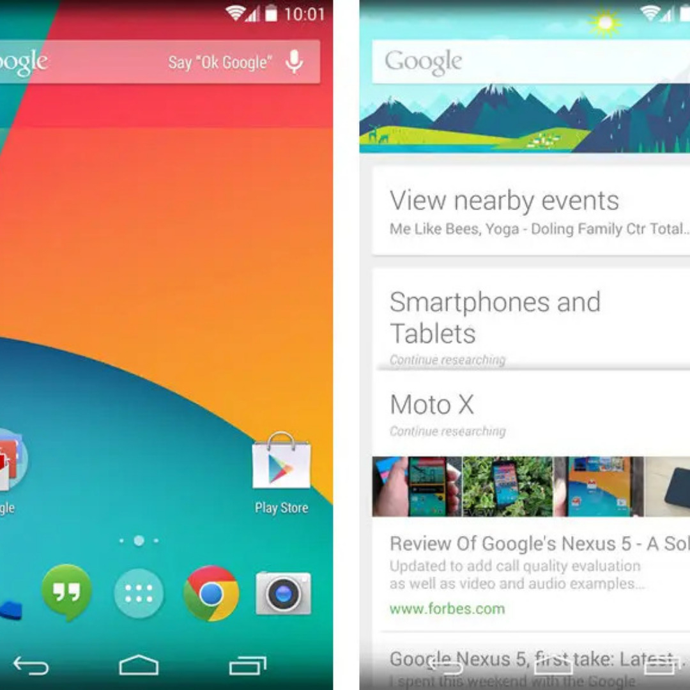
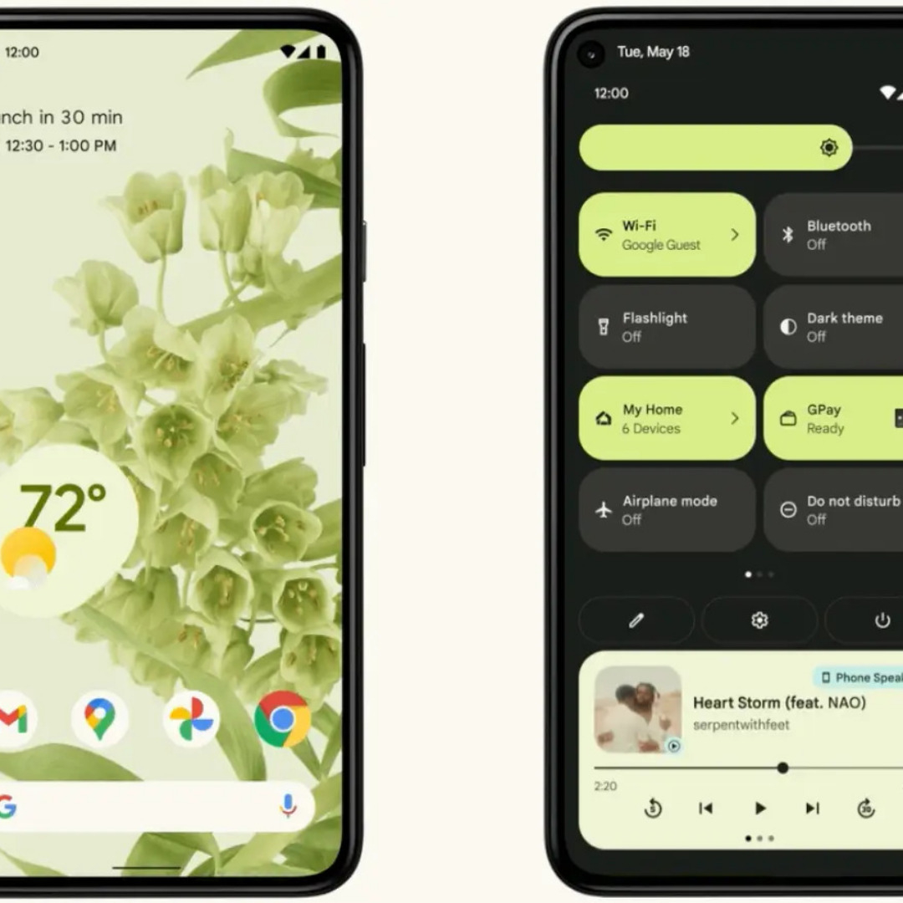
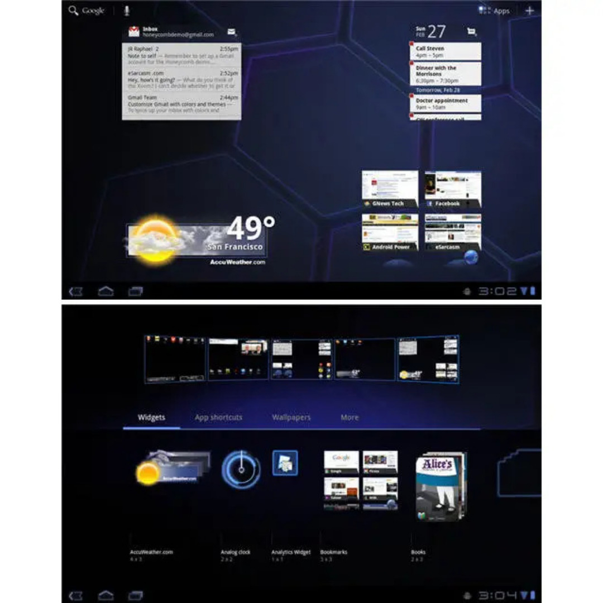

KitKat

1.0

Material You

HoneyComb
Benvenuti nel mondo di Android, il sistema operativo mobile più diffuso al mondo. In questa introduzione, vi presenterò alcuni trucchi e consigli che vi aiuteranno a sfruttare al meglio le potenzialità del vostro dispositivo Android.
Android offre una vasta gamma di funzionalità personalizzabili e una vasta selezione di app disponibili su Google Play Store. Una delle prime cose da fare è esplorare le impostazioni del vostro dispositivo per personalizzarlo secondo le vostre preferenze. Potete regolare la luminosità dello schermo, le notifiche, i suoni e molto altro ancora.
Per accedere rapidamente alle app più utilizzate, potete aggiungere widget sulla schermata principale del vostro dispositivo Android. In questo modo, avrete un accesso rapido alle informazioni importanti e alle funzioni delle app senza doverle aprire.
Utilizzando le scorciatoie delle app, potete accedere alle funzioni principali di un'app con un semplice tocco o gesto. Ad esempio, potete premere a lungo sull'icona dell'app della fotocamera per scattare una foto immediatamente.
Grazie alla funzione di ricerca di Google integrata in Android, potete trovare rapidamente informazioni, contatti, app e molto altro. Basta toccare l'icona della ricerca nella schermata principale o utilizzare il widget di ricerca Google per accedere alle risorse online.
Per una maggiore produttività, potete utilizzare la funzione di "Schermo diviso" per visualizzare e utilizzare contemporaneamente due app sullo stesso schermo. Basta toccare il pulsante di recente app (o il pulsante dedicato sulla barra di navigazione) e trascinare l'app desiderata verso il lato dello schermo.
Android offre anche una serie di funzioni di sicurezza, come il riconoscimento dell'impronta digitale, il riconoscimento del viso o la scansione dell'iride per sbloccare il vostro dispositivo in modo rapido e sicuro.
Per risparmiare batteria, potete utilizzare la modalità risparmio energetico o ottimizzare le impostazioni delle app per limitarne l'utilizzo in background.
Infine, per tenere il vostro dispositivo Android sempre aggiornato e al sicuro, è importante installare regolarmente gli aggiornamenti del sistema operativo e delle app disponibili.
Con questi trucchi e consigli, potrete sfruttare al meglio il vostro dispositivo Android, personalizzarlo secondo le vostre esigenze e rendere la vostra esperienza mobile ancora più efficiente e piacevole. Esplorate le funzionalità del vostro dispositivo e scoprite tutte le possibilità offerte da Android.
Scopri alcuni trucchi per sfruttare al meglio Android:
Utilizza le gesture di navigazione per muoverti rapidamente tra le app.
Personalizza la schermata principale con cartelle, widget e nuovi launcher.
Ottimizza la durata della batteria disattivando funzioni non necessarie.
Personalizza le impostazioni di notifica per gestire meglio le notifiche.
Sfrutta le app di automazione per automatizzare azioni comuni.
Scopri alcuni trucchi avanzati per sfruttare al massimo il tuo dispositivo Android:
Utilizza l'app Tasker per creare scenari personalizzati in base a vari trigger, come la posizione, l'ora o le app aperte. Ad esempio, puoi impostare il telefono in modalità silenziosa quando sei al lavoro.
Abilita la modalità di sviluppatore nelle impostazioni di Android per accedere a opzioni avanzate, come il debugging USB e le impostazioni di animazione. Ciò ti permette di personalizzare ulteriormente il tuo dispositivo e ottimizzare le prestazioni.
Utilizza le app di gestione dei file come Solid Explorer o FX File Explorer per avere un maggiore controllo sui file del tuo dispositivo, consentendoti di esplorare, copiare, spostare o eliminare i file in modo più efficace.
Sfrutta l'app Tasker insieme all'app AutoVoice per controllare il tuo dispositivo tramite comandi vocali personalizzati. Puoi creare comandi vocali per avviare app, eseguire azioni specifiche o controllare impostazioni del telefono.
Utilizza la funzione "Multi-Finestra" disponibile su alcuni dispositivi Android per eseguire due app contemporaneamente sullo schermo diviso. È particolarmente utile quando devi fare ricerche o prendere note durante la lettura di un articolo o la visualizzazione di un video.
Ricorda di fare attenzione quando utilizzi trucchi più avanzati e di seguire le istruzioni correttamente. Esplorare queste funzionalità ti permetterà di personalizzare ulteriormente il tuo dispositivo Android e renderlo più adatto alle tue esigenze.
Mantieni il sistema operativo e le app aggiornate: Assicurati di mantenere sempre il tuo dispositivo Android aggiornato con le ultime versioni del sistema operativo e delle app. Le nuove versioni spesso includono miglioramenti in termini di sicurezza, prestazioni e funzionalità. Verifica regolarmente la presenza di aggiornamenti nelle impostazioni del tuo dispositivo o nell'app Google Play Store.
Utilizza un'app di sicurezza: Per proteggere il tuo dispositivo Android da malware, virus e altre minacce, è consigliabile utilizzare un'app di sicurezza affidabile. Ci sono molte app disponibili sul Google Play Store, come Avast, Bitdefender o McAfee, che offrono protezione antivirus, protezione della privacy e altre funzionalità di sicurezza.
Ottimizza le impostazioni di risparmio energetico: Per prolungare la durata della batteria del tuo dispositivo Android, puoi ottimizzare le impostazioni di risparmio energetico. Vai alle impostazioni e cerca "Batteria" o "Risparmio energetico" per attivare la modalità di risparmio energetico o regolare le impostazioni per limitare l'utilizzo di energia da parte delle app in background.
Personalizza il tuo dispositivo: Android offre molte opzioni di personalizzazione per adattare il tuo dispositivo alle tue preferenze. Puoi cambiare lo sfondo, il tema, gli sfondi animati e le icone del tuo schermo home. Esplora le impostazioni del tuo dispositivo per trovare le opzioni di personalizzazione disponibili e sperimenta per creare un'esperienza unica.
Utilizza il backup dei dati: Per evitare la perdita di dati importanti, è consigliabile abilitare il backup automatico dei dati del tuo dispositivo Android. Puoi utilizzare il servizio di backup integrato di Google per salvare i tuoi contatti, foto, video, app e altre informazioni importanti sul cloud. Vai alle impostazioni e cerca "Backup" o "Account" per configurare il backup dei dati.
Esplora le app e le funzionalità del Google Play Store: Il Google Play Store offre un'enorme varietà di app e giochi per Android. Esplora le diverse categorie, leggi le recensioni degli utenti e scopri nuove app che possono migliorare la produttività, l'intrattenimento e l'esperienza complessiva del tuo dispositivo Android.
Sfrutta le funzionalità di condivisione e sincronizzazione: Android offre molte opzioni di condivisione e sincronizzazione tra dispositivi. Puoi utilizzare servizi come Google Drive per archiviare e condividere file, Google Photos per salvare e sincronizzare le tue foto, e Google Keep per prendere appunti e promemoria che possono essere accessibili su più dispositivi.
Ci sono diversi forum dedicati a GNU/Linux dove puoi iscriverti per partecipare alle discussioni e ottenere supporto dalla comunità. Ecco alcuni forum popolari:
XDA-Developers è uno dei forum più noti e attivi per gli appassionati di Android. Offre discussioni su una vasta gamma di argomenti, tra cui sviluppo, modding, recensioni di dispositivi, guide e supporto tecnico.
Android Central è un sito di notizie e recensioni su Android che include anche un forum molto attivo. È un luogo ideale per discutere di notizie, problemi tecnici, app, accessori e molto altro.
Android SubReddit Reddit ospita una vasta comunità di utenti di Android su r/Android, dove puoi trovare discussioni, notizie, consigli, recensioni e molto altro ancora. È un ottimo posto per ottenere informazioni, condividere esperienze e porre domande agli altri utenti di Android.
Android Forums è un altro forum dedicato ad Android con una comunità attiva. Offre discussioni su varie tematiche, inclusi consigli, trucchi, recensioni di dispositivi, app e assistenza tecnica.
AndroidPit Forum è un sito che offre notizie, recensioni e guide su Android. Il loro forum è un luogo in cui gli utenti possono condividere esperienze, porre domande e discutere di vari aspetti del sistema operativo Android.